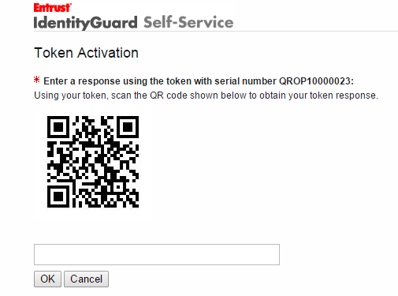

|
IdentityGuard Server 12.0 Administration Guide |
|
IdentityGuard Server 12.0 Administration Guide |
If directed by your token provider, activate your token through the Self-Service Website.
To activate your WatchdataQRO hardware token using Self-Service
1. Log in to the token provider's Self-Service Web site.
2. On the Self-Administrative Actions page, click I’d like to activate my token so I can start using it.
A confirmation message appears.
3. Click Yes.
The Token Activation screen appears and displays a QR code.

4. Long press the On button to start the token.
5. Point the camera on the back of the token at the QR code displayed on the Self-Service page, and then press OK.
6. In the text box below the QR code, enter your token response (the number that appears when you press the button on your token).
7. Click OK.
An updated Self-Administration Actions screen appears, confirming that your token is now active.
Note that the Self-Administration Actions list now includes more options for administering your token.
8. Click Done on the Self-Service Web page.